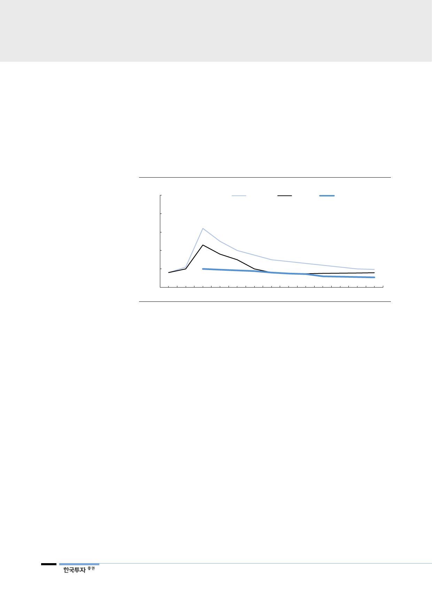

현대글로벌서비스는 3분기에
연초 제시한 수주 가이던스
초과
계 제조업체들의 풀 캐파 생산을 가정해도 스크러버 설치가 가능한 선박은 2,000
척 정도(전세계 선박의 5% 내외)에 불과할 전망이다. 글로벌 스크러버 제작업체
의 기본 납기가 15개월 이상 걸리는 상황을 고려하면 최근 계약에 들어간 스크러
버는 2021~2022년에 설치 완료된다는 점이다. 영국 해운조선 리서치 기관인
Clarksons는 retrofit 스크러버 시장이 2024년까지 지속 성장할 것으로 예상했
는데, 공급이 수요를 따라갈 수 없는 타이트한 수급 환경이 예상된다.
[그림 10] 저유황 연료유는 2020년 휘발유 이상의 스프레드를 기록할 전망
(달러/배럴)
50
PIRA
IHS
FACTS
40
30
20
10
0
2018F
2020F
2022F
2024F
자료: PIRA Energy Group, HIS Markit, Facts Global Energy
2026F
2028F
2030F
현대글로벌서비스는 스크러버 설치를 맡고 있다. 현대글로벌서비스는 상대적으로
짧은 납기기간(7~8개월)과 경쟁사 대비 비용 경쟁력으로 현재까지 95척의 설치
계약을 완료했고 이중 45척은 현대중공업 아래 자회사인 현대파워시스템이 제작
한 현대스크러버 제품이다. 현대글로벌서비스는 3분기 retrofit(스크러버/BWTS)
에서 누적 수주 2억 9,400만달러를 달성했는데, 10월에 추가 수주한 1억달러를
포함시 연간 수주는 4억달러로 연초 제시한 1억 9,400달러를 114% 초과 달성
할 전망이다.
8